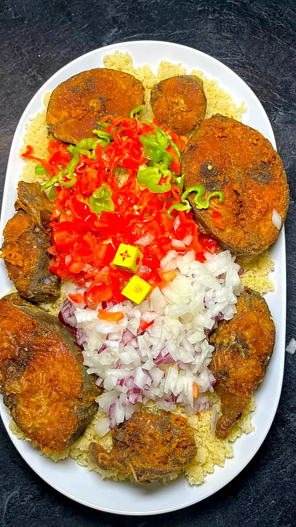
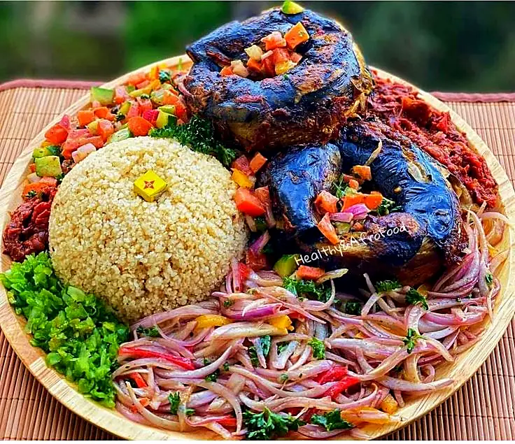
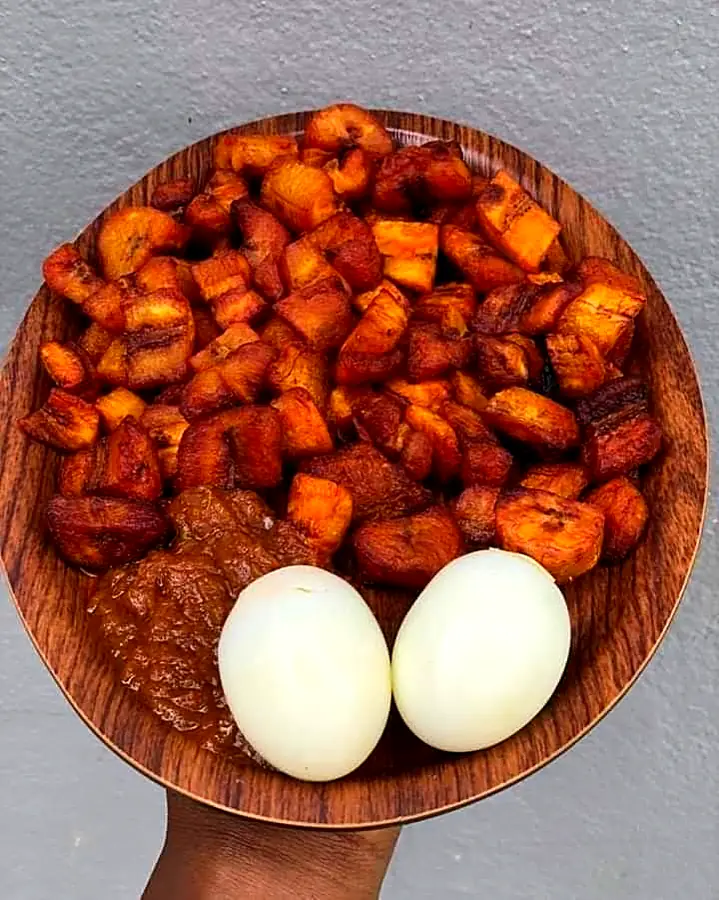
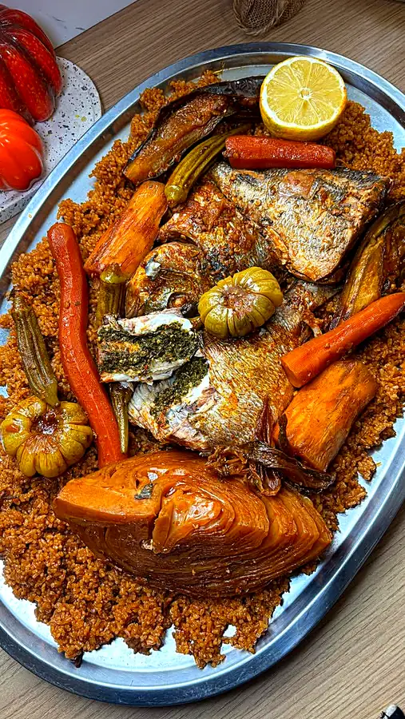

Adjoua Koffi
Fondatrice et cheffe
Trente ans de sauce graine derrière elle. Elle goûte chaque marmite avant le service.
Un maquis de six tables devenu la terrasse la plus gourmande des Deux-Plateaux.
Tout a commencé sous un baobab, avec une marmite de sauce graine et six tables en plastique.
En 2014, Mama Adjoua ouvre un petit maquis au pied du grand baobab de la rue des Jardins. Le midi, les employés du quartier viennent pour son garba ; le soir, les familles restent pour le poisson braisé.
Dix ans plus tard, l'arbre est toujours là et la recette n'a pas changé : des produits du marché de Cocody achetés le matin, l'attiéké de Dabou, le poisson de Grand-Bassam et le piment pilé à la main.
Le Baobab, c'est la cuisine des maisons d'Abidjan, servie avec le temps qu'il faut et le sourire en plus.
Fondatrice et cheffe
Trente ans de sauce graine derrière elle. Elle goûte chaque marmite avant le service.
Maître de la braise
Poissons, choukouya et poulets braisés : c'est lui qui tient le feu, tous les soirs.
Responsable de salle
Elle connaît le prénom des habitués et place les anniversaires sur la terrasse.



